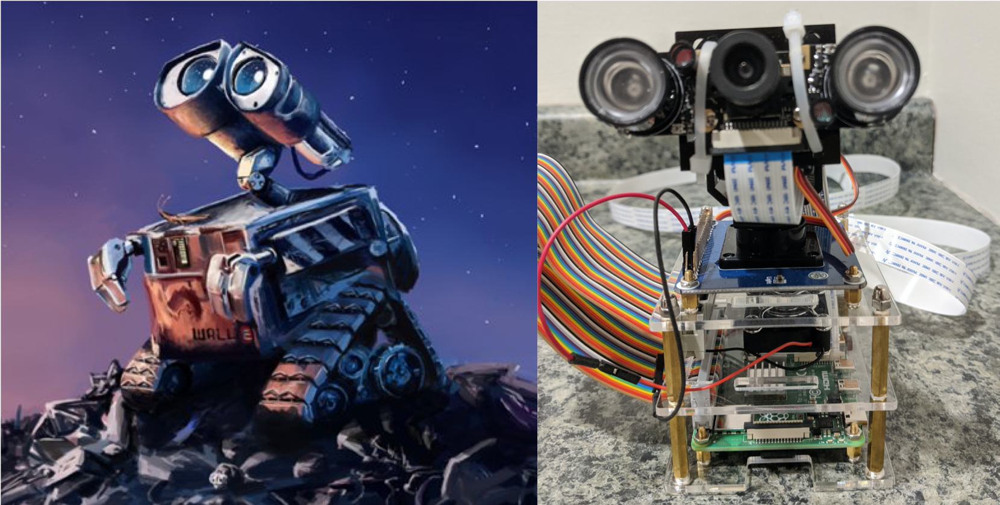

    <main class="jupyter-page">
    <div class="jb_cell">

<div class="cell border-box-sizing text_cell rendered"><div class="inner_cell">
<div class="text_cell_render border-box-sizing rendered_html">
<h1 id="Face-Tracking,-Recognition,-and-Notification-using-a-Raspberry-Pi-4B,-Intel-Movidius-Neural-Compute-Stick,-and-Amazon-Web-Services">Face Tracking, Recognition, and Notification using a Raspberry Pi 4B, Intel Movidius Neural Compute Stick, and Amazon Web Services<a class="anchor-link" href="#Face-Tracking,-Recognition,-and-Notification-using-a-Raspberry-Pi-4B,-Intel-Movidius-Neural-Compute-Stick,-and-Amazon-Web-Services"> </a></h1><h2 id="Project-Description">Project Description<a class="anchor-link" href="#Project-Description"> </a></h2><p>This project is focused on edge computing using a Raspberry Pi, Intel Movidius Compute Stick, and a Pi-cam to detect, track, and identify faces from a video stream in real-time. The application continuously monitors and adjusts the vertical and horizontal position of two servos based on the location of faces in a frame. If a face is detected, then the activity is logged and a notification SMS is sent to the administrator using Amazon Web Services (AWS) API Gateway, Lambda, and Simple Notification Services (SNS). This project expands on the <strong><a href="https://github.com/opencv/open_model_zoo/tree/master/demos/python_demos/face_recognition_demo">face recognition demo</a></strong> found in the OpenCV open model zoo.</p>
<p></p>

</div>
</div>
</div>
</div>

 


    </main>
    